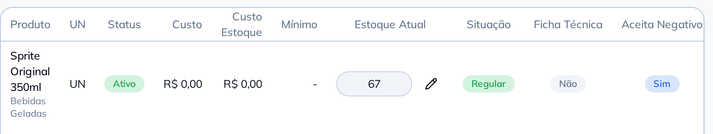

Chegaram 20 Sprite Original 350ml,
dá entrada no estoque
Pronto: entrada de 20 UN em Sprite Original 350ml. O saldo agora é 67.

Diga o que chegou e quanto. Pode ser um item ou a nota inteira.
Chegaram 20 Sprite Original 350ml,
dá entrada no estoque
Pronto: entrada de 20 UN em Sprite Original 350ml. O saldo agora é 67.
